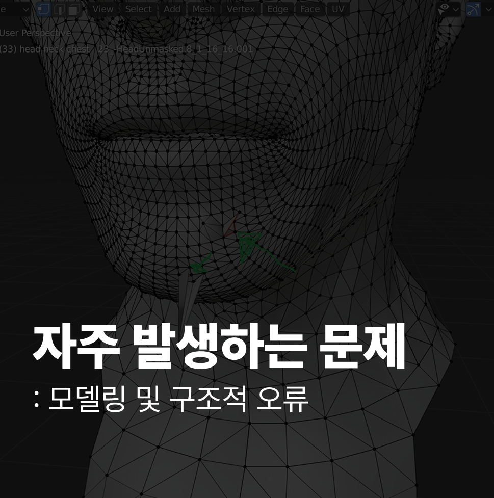

1 지오메트리 과도한 사용
모델링 초반부터 너무 많은 면(Polygon)을 사용하여 컴퓨터 성능을 저하시키거나, 간단한 형태에 서브디비전 서페이스(Subdivision Surface) 모디파이어를 지나치게 적용하는 경우입니다.
2 면의 방향 (Normal) 문제
면의 앞뒷면(Normal) 방향이 뒤집혀 렌더링 시 내부가 보이거나 쉐이딩이 이상하게 나타나는 문제입니다 (주로 외부에서 가져온 모델이나 복잡한 불리언 작업 이후에 흔히 발생합니다).
3 Scale 적용 누락
오브젝트의 크기(Scale)를 변경한 후에 Ctrl+A > Scale을 눌러 **스케일 값 초기화(Apply Scale)**를 하지 않아 베벨이나 Array와 같은 모디파이어가 기대와 다르게 작동하는 치명적인 실수입니다.
4 엔곤(N-gon) 및 삼각형 과다 사용
사각형(Quads) 토폴로지를 사용하는 대신 면이 5개 이상인 엔곤이나 삼각형을 과도하게 사용하여 모델의 쉐이딩이 울퉁불퉁해지거나 애니메이션 작업에 부적합해지는 경우입니다.
5 중복된 정점(Vertex) 정리 누락
같은 위치에 정점들이 겹쳐 있는 상태를 'Merge by Distance' 기능으로 정리하지 않아 모델링을 진행하는 동안 예측하지 못한 틈이나 오류가 발생하는 경우입니다.